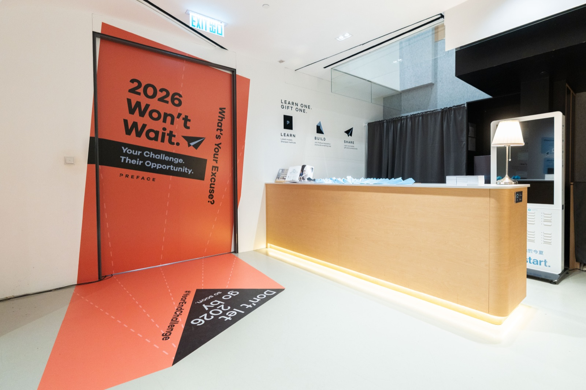
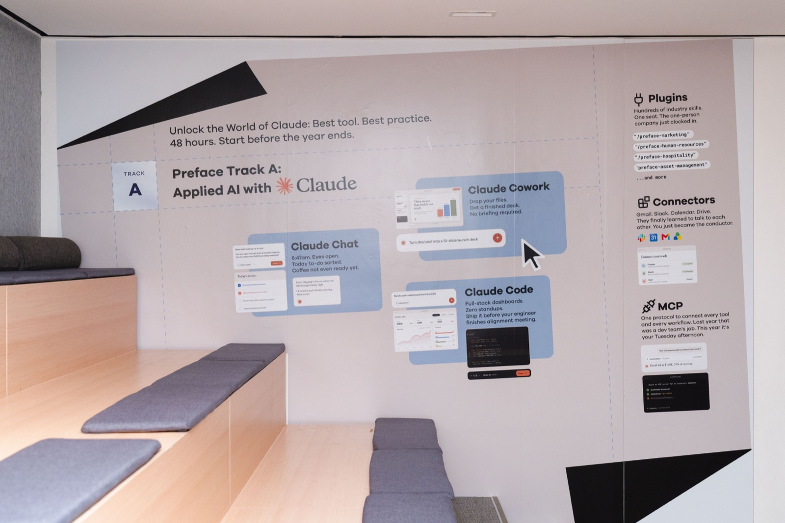
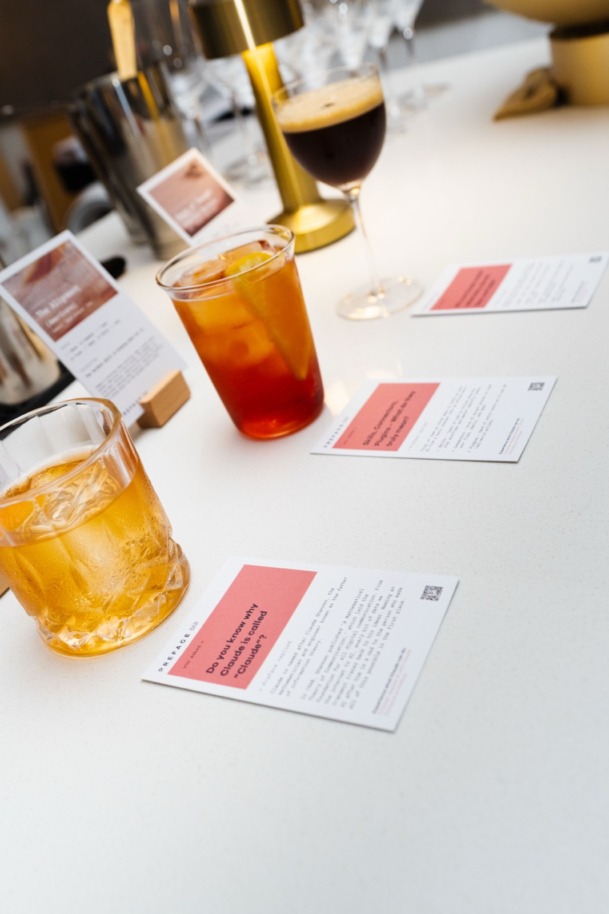
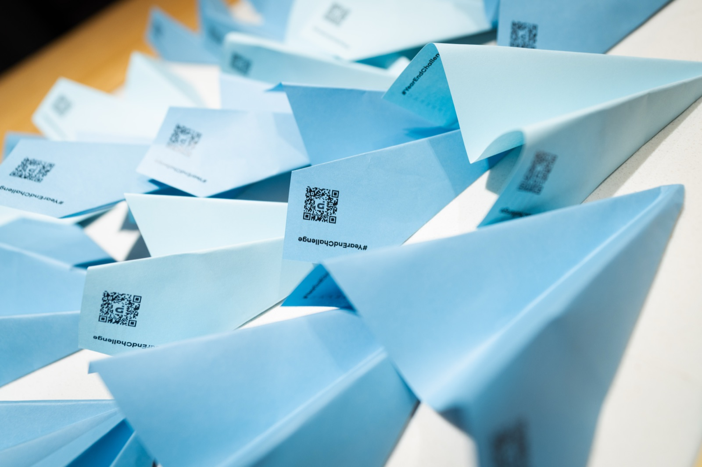
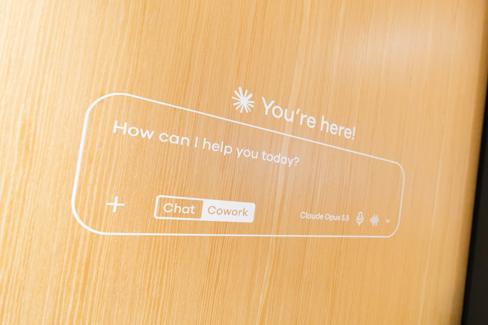
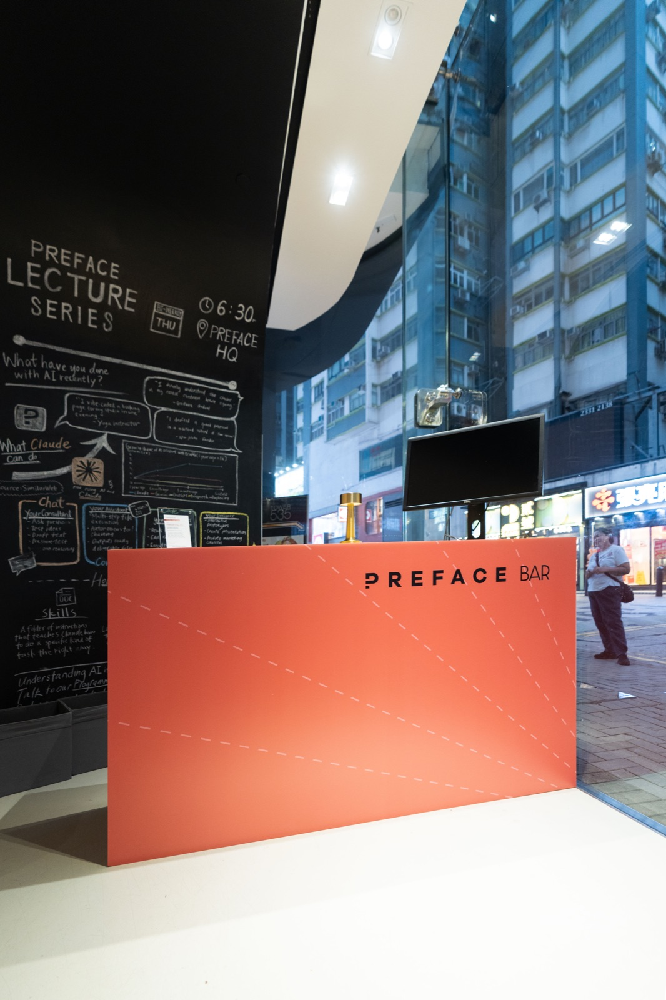
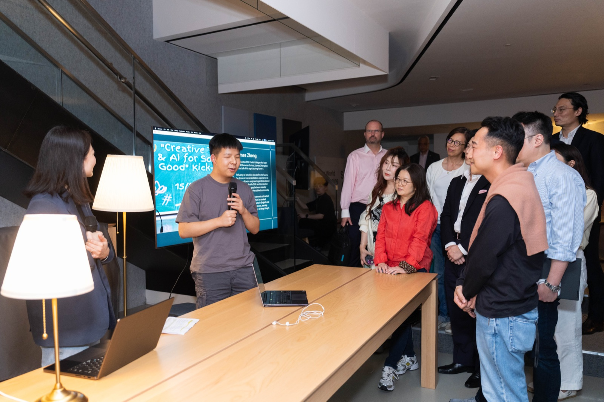
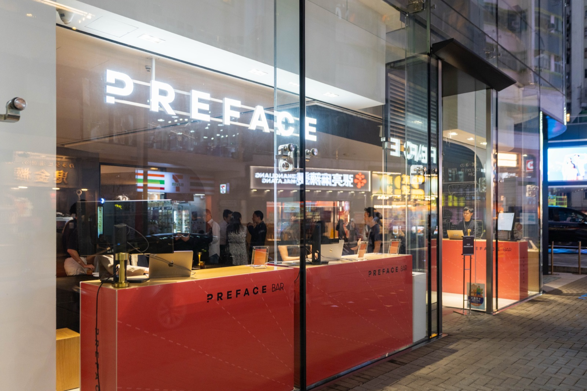

Turning an Empty Floor into a Branded Bar in 48 Hours
A full-floor event activation usually takes months. I got the brief on a Monday and the doors opened on Wednesday. I owned the brief, the measuring, the production and the install, and the floor went from empty to a fully branded bar in about 48 hours.
~48 hrs
brief to doors
~80
guests
1
owner: brief → install

The floor, installed. Empty on Monday morning.
The brief
The occasion was an executive event at Preface HQ, for a mix of senior tech people, clients, and executive-level students.
The ask for the floor was specific: turn the entrance into a bar. Make it feel vibey, not like a corporate lobby. Along the way, explain what the product does and carry a seasonal give-and-learn challenge. So the floor had two jobs: be a place people wanted to linger in, and carry the message without a presenter.
What went on the floor
All of this was quoted, measured, designed, ordered and installed inside two days:
Station wrapping and printed station cards
A paper-plane brochure, foamboards, three walls of diecut stickers
Floor, door and hidden-door stickers that explained the product and the challenge
Digital screens: a vertical event sign and a 2×2 storefront bar menu / key visual
A bar with three themed drinks, catering, lamps, TVs and cable management

The floating-window wall — app-style assets I built myself, so the wall explained the product without a presenter.

The bar: three themed drinks and printed cards — one asked "Do you know why Claude is called Claude?"
Four decisions under the clock
1. Measure first, before any design existed
I measured the floor the moment the brief landed. Normally design leads and measurement follows; with 48 hours, that order kills you. Every surface I could size on Monday was something designers could build to and vendors could quote on straight away. The trade-off: measuring before the plan was stable meant re-measuring when it shifted, and quick solo re-measuring is easy to get wrong.
2. Call vendors directly, and be transparent
There was no time for the usual costing-then-design-then-approval order. I ran costing and design in parallel and called our vendors directly, open about exactly where we were and what could still slip. The risk was real — a rejected design or a wrong cost was wasted effort. I took it, because the safe order would have missed the date. Most of the speed came from relationships, not process.
3. Choose materials by what can actually arrive
My proudest craft here wasn't a design. It was fast material decisions and the follow-through to make them real.
The paper-plane brochure had to fold and fly, so thin paper — which was also the only stock that would arrive in time.
The station wrapping couldn't connect end to end, so I designed a two-sided white edge instead of four. It reads as intentional and it saved the install.
The walls went to diecut stickers — the only material that would make the deadline.

The paper-plane brochure. Thin paper was both the better choice and the only one that would arrive in time.
4. Make the product assets myself
I built the app-style floating-window assets myself and packaged them into one organised folder so designers could drag and drop them in without waiting on me. It sped up design and it showed guests what the product does, right on the wall.

One of the floating-window assets.
What went wrong
A few things broke, and they cost time and money.
The bar measurement was wrong. Short-notice solo re-measuring caught me out; a diecut had to be reordered and fixed on event day.
A wireless mic failed an hour before doors. I found the manual, re-synced the pair, and it worked. Not my role, but nobody else would have caught it in time.
A guest's laptop didn't fit our two-TV system. I sourced an adapter, it didn't work, so the guest demoed on his own screen and I reset the main system for the presenters. About six minutes, no black screen in front of the room.

The bar and event signage in place.
Results
Fully branded and installed in about 48 hours, in time for doors.
Around 80 guests attended.
The team had strong conversations on the night; the floor gave them a setting that made those easier.

The room came around the table for a live demo. The floor's job was to pull people in; it did.

The storefront at night — the whole floor, street-facing. Empty on Monday morning.
What I'd do differently
The workflow is the lesson, so I turned it into a checklist:
Confirm the brief early, and agree how much it can change. Every late change cost a re-measure.
Start with costing — approvals take time.
Measure with two people: one measures, one checks hidden gaps and exact-fit surfaces.
Block a final review before output. One last on-brief check would have caught the diecut and the bar.
Lock the layout with stakeholders earlier. On a compressed schedule, alignment was the hardest part.
The takeaway
On a short timeline, the most useful skill isn't speed. It's knowing which things are fixed — the date, the real dimensions, what a vendor can deliver — and designing everything else around them. Measure first, choose materials by what can actually arrive, and be honest with your vendors about where you are.